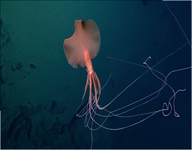

СЕМЕЙСТВА : род глубоководных кальмаров из отряда Oegopsida
ГЛУБИНА:1940 м, 2195 м, 2576 м и т. д.
КОГДА ОТКРЫЛИ: в 1907 году
ТИП ПИТАНИЯ:неизвестен (Однако учёные предполагают, что основой питания этих глубоководных кальмаров служит зоопланктон.)
ПОВЕДЕНИЕ:В спокойном состоянии магнапинны висят в толще воды вниз головой, расставив практически горизонтально покрытые присосками основания рук. С их окончаний вертикально вниз свисают нитевидные филаменты.
Часто кальмар дрейфует таким образом, что концы нитей лишь немного не достают до дна.
Как правило, магнапинны не обращают внимания на приближающийся к ним батискаф. Но если внимание исследователей становится слишком назойливым, кальмар складывает руки, лениво взмахивает плавниками и отплывает в сторону.
Нитевидные отростки при движении пассивно тянутся за кальмаром, как нитки за детским воздушным шариком.
Исследователи предполагают, что эти нитевидные отростки рук используются в качестве своеобразных липких ловушек, к которым прилипают частицы детрита и мелкие ракообразные. Когда на нить налипает достаточно пищи, кальмар скручивает её, подносит ко рту и счищает добычу.

наверх